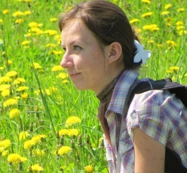
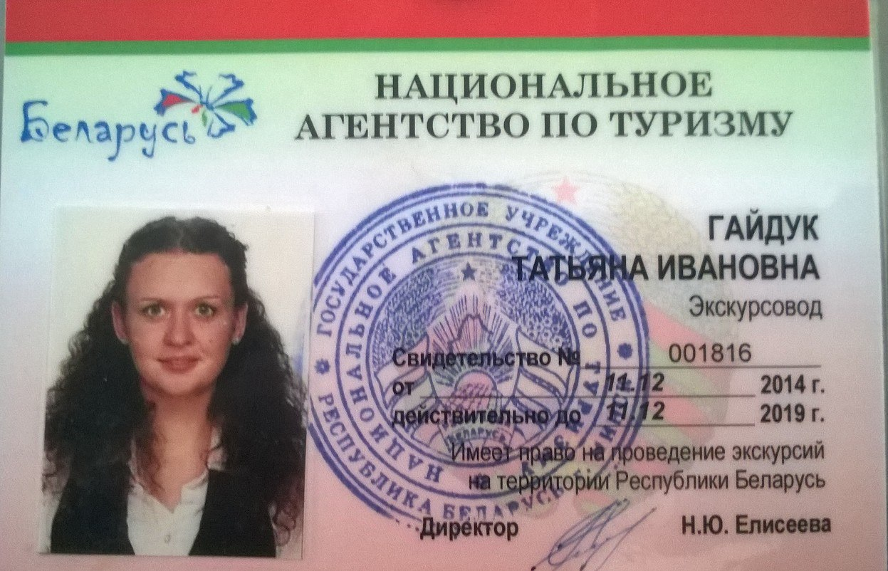
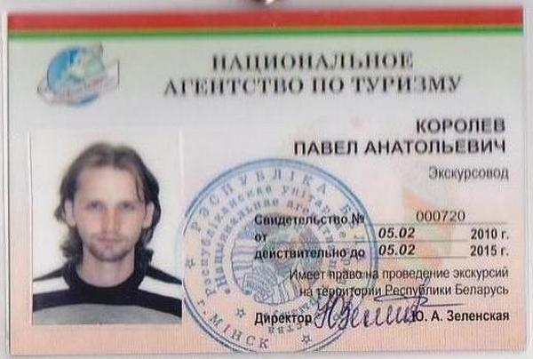

Прывітанне! давайце знаёміцца: мы - суполка "Менскі велашпацыр", экскурсаводы, аматары Мінска і ровараў. Нас аб'ядноўвае хранічнае няўменне сядзець дома, мы дужа любім забірацца далёка ад цёплага, наседжанага хатняга кутка, каб потым знаходзіць дарогу назад і пажадана з прыгодамі. Мы любім свой горад - не толькі яго самую прыгожую, цэнтральную частку, цэнтральныя праспекты, Верхні горад і Траецкае - але і яго закуткі, прыватныя сектары і спальныя раёны, прамзоны і недарэчныя пералескі. Для нас вялікая асалода - распавядаць пра Мінск іншым людзям, як тутэйшым, так і прыезжым, асабліва з выкарыстаннем ровара. Ровар - асабліва зручны від транспарта для знаёмства з горадам: дробныя, але важныя дэталі - ужо не схаваюцца ад вачэй вандроўніка, ледзь прыкметныя нюансы ў зацішных дварах часам могуць сказаць болей, чым пампезныя помнікі на цэнтральных плошчах. "Менскі велашпацыр" стартаваў увесну 2014 г. і на сённяшні дзень нашая велабанда выглядае наступным чынам:

Раман Абрамчук, экскурсавод, культуролаг, заснавальнік "Менскага велашпацыра".
Мовы экскурсій: беларуская, руская, польская, ангельская, французская.
Улюбёныя мясціны: Верхні горад у Мінску, Замкавая гара у Мсціславе (Беларусь), Куршская каса ў Літве.
Аўтарскія маршруты: "Мінскія хіпаны" ("Мінск Джынсавы"), "Мінскія небажыхары: знаёмства з манументальнай скульптурай сталічных дахаў", "Мінск графа Чапскага", "Мінск экуменічны: богашукальніцкая велапрыгода", "Зімовая казка Лошыцы: лыжная экскурсія".
Пра сябе: "Мір. Ровар. Рок'н'рол."
асабістыя кантакты: +375297040018, romannn@tut.by, Facebook, Вконтакте.
УНП 192201977 (пасведчанне ІП ад 28.01.2014, выдадзена Мінгарвыканкамам), банкаўскія рэквізіты - тут.
Пасведчанне аб атэстацыі экскурсавода Нацыянальнага агенцтва па турызме Рэспублікі Беларусь - № 000556, 30.04.2009, падоўжана - № 001533, 31.04.2014


{kind=link}
Валянціна Кароткіна, экскурсавод, выкладчык гісторыі.
Мовы экскурсій: беларуская, руская, польская.
Улюбёныя мясціны: Лошыцкi парк у Мінску, Замкавая гара у Браславе
(Беларусь),
горы Чуфут-Кале (Крым).
Аўтарскія маршруты: "Жыццё - Айчыне, гонар - нікому! Па мясцінах Чапскіх на
Міншчыне", "Менск гандлёвы", "Менск у Мінску", "Я хацеў бы спаткацца з вамі на ровары: менскімі
шляхамі Багдановіча", "Вела-Дзяды", "Па слядах Ваньковічаў".
Пра сябе: "Люблю спазнаваць мясціны, дзе ніколі не была, цягнікі, дарогі,
зоркі
і поўню, цяжкі заплечнік за спінай і вогнішчы."
Пасведчанне аб атэстацыі экскурсавода Нацыянальнага агенцтва па турызме Рэспублікі Беларусь
- №
000899, 25.03.2011
{kind=link}

Таццяна Гайдук, экскурсавод, гісторык.
Мовы экскурсіі: беларуская, руская.
Улюбёныя мясціны: Ракаўскае прадмесце ў Мінску, мястэчка Косава (Беларусь), вежа Гедыміна ў Вільні (Літва).
Аўтарскія маршруты: "Мінскія прадмесці: Каралішчавічы"
Пра сябе: "Люблю файныя мясціны нашай Радзімы, іх шмат, але гісторыю іх мы забылі ці не ведаем."
Пасведчанне аб атэстацыі экскурсавода Нацыянальнага агенцтва па турызме Рэспублікі Беларусь - № 001816, 11.12.2014

{kind=link}

Павел Каралёў, экскурсавод, гісторык.
Мовы экскурсіі: беларуская, руская.
Улюбёныя мясціны: Верхні горад у Менску, беларускія мястэчкі Лукомль, Чарэя, самы вялікі валун у Беларусі - ля вёскі Горкі Шумілінскага раёна, і ўсе мясціны ў свеце, дзе ёсць шмат цікавага.
Пра сябе: "Люблю паказваць малавядомыя мясціны Менска, чытаць гістарычную
Пасведчанне аб атэстацыі экскурсавода Нацыянальнага агенцтва па турызме Рэспублікі Беларусь - № 000720, 05.02.2010

{kind=link}